Series Temporales: Procesos ARIMA con estacionalidad
Máster de Bioestadística (Modelización Estadística)
1 Introducción
En general, la capacidad de toma de datos posibilita que el fechado de las series sea inferior al año, apareciendo la componente estacional. No es difícil disponer de series mensuales, trimestrales, diarias o incluso con frecuencia superior.
En este tema se revisan los conocimientos del tema previo, ampliándolos a fin de contemplar la presencia de estacionalidad en las series temporales.
Se mantienen las hipótesis sobre el proceso generador de datos (estacionario y ergódico) y el vector de residuos (ruido blanco).
Recuerda que \(m\) es el orden estacional.
2 Procesos ARIMA con estacionalidad
2.1 Procesos autorregresivos \(AR_m(P)\)
Definición
El modelo general autorregresivo estacional de orden P, \(y_t \sim AR_m(P)\), viene definido por \[y_t=c + \phi_m y_{t-m} + \phi_{2m} y_{t-2m} + \ldots + \phi_{Pm} y_{t-Pm} + \varepsilon_t,\] que usando el operador retardo queda \[(1 - \phi_m L^m - \phi_{2m} L^{2m} - \ldots - \phi_{Pm} L^{Pm})y_t = c + \varepsilon_t.\]
Propiedades
El proceso es estacionario si quedan fuera del círculo de radio unidad todas las raíces del polinomio \[\Phi_P(z) = 1 - \phi_m z^m - \phi_{2m} z^{2m} - \ldots - \phi_{Pm} z^{Pm}.\]
Es invertible siempre.
Sobre todo,
- En la FAC las autocorrelaciones de orden múltiplo de m \((m,2m,\ldots)\) decaen exponencialmente a partir del orden P.
- En la FACP las autocorrelaciones parciales de orden múltiplo de m verifican que los P primeros valores son no nulos y todos los demás valen cero.
Ejemplos
\(y_t \sim AR_{12}(1):\;\;y_t = c + \phi_{12} y_{t-12} + \varepsilon_t\) o \((1 - \phi_{12} L^{12})y_t = c + \varepsilon_t\)
\(y_t \sim AR_7(2):\;\;y_t = c + \phi_7 y_{t-7} + \phi_{14} y_{t-14} + \varepsilon_t\) o \((1 - \phi_7 L^7 - \phi_{14} L^{14})y_t = c + \varepsilon_t\)
Simulaciones de procesos autorregresivos \(AR_m(P)\)
La Figura 1 muestra una simulación del proceso \(AR_{4}(2)\) \(y_t = 0.7y_{t-4} - 0.7y_{t-8} + \varepsilon_t\) (panel superior), y del proceso \(AR_{12}(1)\) \(y_t = 0.6y_{t-12} + \varepsilon_t\) (panel inferior). En ambos casos la muestra es de tamaño 500 y \(\varepsilon_t\) se distribuye como una normal con media cero y varianza la unidad. (Todas las simulaciones se han realizado con la función arima.sim de la librería stats.)
2.2 Procesos en medias móviles \(MA_m(Q)\)
Definición
El modelo general en medias móviles estacional de orden Q, \(y_t \sim MA_m(Q)\), viene definido por \[y_t=c + \varepsilon_t + \theta_m \varepsilon_{t-m} + \theta_{2m} \varepsilon_{t-2m} + \ldots + \theta_{Qm} \varepsilon_{t-Qm},\] que usando el operador retardo queda \[y_t = c + (1 + \theta_m L^m + \theta_{2m} L^{2m} + \ldots + \theta_{Qm} L^{Qm}) \varepsilon_t.\]
Propiedades
El proceso es invertible si quedan fuera del círculo de radio unidad todas las raíces del polinomio \[\Theta_Q(z) = 1 + \theta_m z^m + \theta_{2m} z^{2m} + \ldots + \theta_{Qm} z^{Qm}.\]
Es estacionario siempre.
Sobre todo,
- En la FAC las autocorrelaciones de orden múltiplo de m verifican que los Q primeros valores son no nulos y todos los demás valen cero.
- En la FACP las autocorrelaciones parciales de orden múltiplo de m decaen exponencialmente a partir del orden Q.
Ejemplos
\(y_t \sim MA_7(1):\;\;y_t = c + \varepsilon_t + \theta_7 \varepsilon_{t-7}\) o \(y_t = c + (1 + \theta_7 L^7)\varepsilon_t\)
\(y_t \sim MA_{12}(2):\;\;y_t=c + \varepsilon_t + \theta_{12} \varepsilon_{t-12} + \theta_{24} \varepsilon_{t-24}\) o \(y_t = c + (1 + \theta_{12} L^{12} + \theta_{24} L^{24})\varepsilon_t\)
Simulaciones de procesos en medias móviles \(MA_m(Q)\)
La Figura 2 muestra una simulación del proceso \(MA_{4}(2)\) \(y_t = 0.7\varepsilon_{t-4} - 0.7\varepsilon_{t-8} + \varepsilon_t\) (panel superior), y del proceso \(MA_{12}(1)\) \(y_t = 0.6\varepsilon_{t-12} + \varepsilon_t\) (panel inferior). En ambos casos la muestra es de tamaño 500 y \(\varepsilon_t\) se distribuye como una normal con media cero y varianza igual a la unidad.

2.3 Procesos \(ARMA_m(P,Q)\)
Definición
El modelo general \(y_t \sim ARMA_m(P,Q)\) viene definido por
\[y_t = c + \phi_m y_{t-m} + \phi_{2m} y_{t-2m} + \ldots + \phi_{Pm} y_{t-Pm} + \varepsilon_t + \theta_m \varepsilon_{t-m} + \theta_{2m} \varepsilon_{t-2m} + \ldots + \theta_{Qm} \varepsilon_{t-Qm},\] que usando el operador retardo queda
\[(1 - \phi_m L^m - \ldots - \phi_{Pm} L^{Pm})y_t = c + (1 + \theta_m L^m + \ldots + \theta_{Qm} L^{Qm}) \varepsilon_t.\]
El proceso más simple es el \(ARMA_m(1,1)\): \(y_t = c + \phi_m y_{t-m} + \theta_m \varepsilon_{t-m} + \varepsilon_{t}.\)
Propiedades
El proceso es estacionario si quedan fuera del círculo de radio unidad todas las raíces del polinomio \[\Phi_P(z) = 1 - \phi_m z^m - \phi_{2m} z^{2m} - \ldots - \phi_{Pm} z^{Pm}.\]
El proceso es invertible si quedan fuera del círculo de radio unidad todas las raíces del polinomio \[\Theta_Q(z) = 1 + \theta_m z^m + \theta_{2m} z^{2m} + \ldots + \theta_{Qm} z^{Qm}.\]
Sobre todo,
- En la FAC las autocorrelaciones de orden múltiplo de m decaen exponencialmente a partir del orden P.
- En la FACP las autocorrelaciones parciales de orden múltiplo de m decaen exponencialmente a partir del orden Q.
Ejemplos
\(y_t \sim ARMA_7(1, 1):\;\;y_t = c + \phi_7 y_{t-7} + \theta_7 \varepsilon_{t-7} + \varepsilon_{t}\) o \((1 - \phi_7 L^7)y_t = c + (1 + \theta_7 L^7)\varepsilon_t\).
\(y_t \sim ARMA_{12}(1, 1):\;\;y_t = c + \phi_{12} y_{t-12} + \theta_{12} \varepsilon_{t-12} + \varepsilon_{t}\) o \((1 - \phi_{12} L^{12})y_t = c + (1 + \theta_{12} L^{12})\varepsilon_t\).
Simulación de un proceso \(ARMA_m(P,Q)\)
La Figura 3 muestra una simulación de tamaño 500 para el proceso \(ARMA_7(1,1)\) \(y_t = 0.7y_{t-7} - 0.5\varepsilon_{t-7} + \varepsilon_t\).

2.4 Procesos \(ARIMA_m(P,D,Q)\)
Si la serie \(y_t\) no es estacionaria en su parte estacional, pero tras diferenciarla \(D\) veces se hace estacionaria, diremos que la serie es integrada estacionalmente de orden \(D\): \(y_t \sim I_m(D)\). Por tanto,
- una serie estacionaria estacionalmente se indicará como \(y_t \sim I_m(0)\).
- \(y_t \sim I_m(1)\) es equivalente a \(\nabla_m y_t = (1 - L^m)y_t \sim I_m(0)\)
Una serie \(y_t\) sigue un proceso \(ARIMA_m(P,D,Q)\) si:
- hay que diferenciarla estacionalmente \(D\) veces para hacerla estacionaria, \(y_t \sim I_m(D)\); y
- la serie diferenciada sigue un proceso ARMA(P, Q), \(\nabla_m^D y_t \sim ARMA_m(P,Q)\).
Entonces, podemos escribir \(y_t \sim ARIMA_m(P,D,Q)\) como \[\begin{equation*} \begin{array}{c@{\quad}ccc} (1 - \phi_m L^m - \ldots - \phi_{Pm} L^{Pm}) & (1- L^m)^D y_t & = & c + (1 + \theta_m L^m + \ldots + \theta_{Qm} L^{Qm}) \varepsilon_t \\ \uparrow & \uparrow & & \uparrow \\ AR_m(P) & I_m(D) & & MA_m(Q) \end{array} \end{equation*}\]
Ejemplo
\(y_t \sim ARIMA_{12}(1, 1, 0)\): \[ \begin{aligned} (1 - \phi_{12} L^{12})(1- L^{12}) y_t & = c + \varepsilon_t \\ y_t & = c + y_{t-12} + \phi_{12}(y_{t-12} - y_{t-24}) + \varepsilon_t \end{aligned} \]
\(log(y_t) \sim ARIMA_{12}(0, 1, 1)\): \[ \begin{aligned} (1- L^{12}) log(y_t) & = TVAy_t = c + (1 + \theta_{12} L^{12}) \varepsilon_t \\ TVAy_t & = c + \theta_{12} \varepsilon_{t-12} + \varepsilon_t \end{aligned} \]
2.5 Proceso \(ARIMA_m(p,d,q)(P,D,Q)\)
La realidad nos muestra que la mayoría de las series con estacionalidad se ajustan a una combinación de procesos regulares y estacionales.
El proceso \(ARIMA_m(p, d, q)(P, D, Q)\) puede ser expresado de forma abreviada como \[\Phi_p(L)\Phi_P(L^m)\nabla^d\nabla_m^D y_t = c + \Theta_q(L)\Theta_Q(L^m)\varepsilon_t,\]
o menos sucintamente como \[\begin{equation*}
\begin{array}{ccccc}
AR(p) & AR_m(P) & I(d) & I_m(D) & \\
\downarrow & \downarrow & \downarrow & \downarrow & \\
(1 - \phi_1 L - \ldots - \phi_p L^p) & (1 - \phi_m L^m - \ldots - \phi_{Pm} L^{Pm}) & (1 - L)^d & (1- L^m)^Dy_t & = \\
c + (1 + \theta_1 L + \ldots + \theta_q L^q) & (1 + \theta_m L^m + \ldots + \theta_{Qm} L^{Qm}) \varepsilon_t & & & \\
\uparrow & \uparrow & & & \\
MA(q) & MA_m(Q) & & &
\end{array}
\end{equation*}\]
Por ejemplo, entre las series mensuales uno de los procesos más comunes es \(ARIMA_{12}(0, 1, 1)(0, 1, 1)\), denominado modelo de las aerolíneas por ser el proceso generador de datos de muchas series mensuales de transporte de pasajeros, en concreto la serie mensual de pasajeros de avión. La ecuación de este modelo es
\[(1-L)(1-L^{12})y_t = (1+ \theta_1L)(1 + \theta_{12}L^{12})\varepsilon_t\] que si desarrollamos queda \[y_t = y_{t-1} + (y_{t-12} - y_{t-13}) + \theta_1 \varepsilon_{t-1} + \theta_{12} \varepsilon_{t-12} + \theta_{1}\theta_{12} \varepsilon_{t-13} + \varepsilon_t.\]
- El número de pasajeros del mes \(t\) es el mismo que el del mes previo \(t-1\), más la diferencia entre estos meses observada el año pasado.
- Si en los meses usados para la predicción (\(t-1\), \(t-12\) y \(t-13\)) ha ocurrido algo extraordinario, hay que tenerlo en cuenta a la hora de afinar la predicción.
Si usamos la transformación logarítmica, tendríamos \[(1-L)(1-L^{12})\log(y_t) = (1+ \theta_1L)(1 + \theta_{12}L^{12})\varepsilon_t\] o \[(1-L)TVAy_t = (1+ \theta_1L)(1 + \theta_{12}L^{12})\varepsilon_t\] que desarrollando queda \[TVAy_t = TVAy_{t-1} + \theta_1 \varepsilon_{t-1} + \theta_{12} \varepsilon_{t-12} + \theta_{1}\theta_{12} \varepsilon_{t-13} + \varepsilon_t.\]
- La tasa de variación anual en el número de pasajeros del mes \(t\) es la misma que la del mes previo \(t-1\).
- Si en los meses usados para la predicción (\(t-1\), \(t-12\) y \(t-13\)) ha ocurrido algo extraordinario, hay que tenerlo en cuenta a la hora de afinar la predicción.
Simulaciones de un proceso \(ARIMA_m(p,d,q)(P,D,Q)\)
La Figura 4 muestra una simulación de tamaño 1000 para el modelo de las aerolíneas, donde se ha supuesto que \(\theta_1=0.7\) y \(\theta_{12}=-0.5\).
3 Ejemplos
3.1 Nacimientos
Vamos a aplicar la metodología de Box-Jenkins a la serie mensual de nacimientos en España desde el año 2000 (véase Figura 5).
nacimientos <- read.csv2("./series/Nacimientos.csv",
header = TRUE)
nacimientos <- ts(nacimientos[, 2],
start = c(1975, 1),
freq = 12)
nacimientos <- window(nacimientos, start = 2000)
autoplot(nacimientos,
xlab = "",
ylab = "Nacimientos",
main = "")
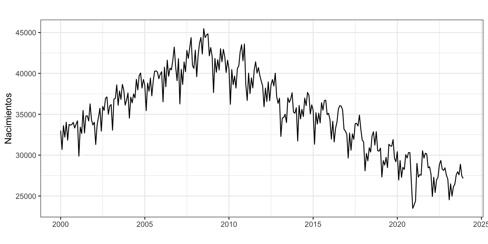
Transformación de la serie
Ya vimos en el Tema 3) que para que la serie sea estacionaria y ergódica había que diferenciarla tanto regular como estacionalmente (d = D = 1). Además, trabajaremos con el logaritmo de la serie para reducir la posible heterocedasticidad y ganar en interpretabilidad. Es decir, trabajaremos con la siguiente serie transformada
\[\nabla\nabla_{12}\log(nacimientos_t) \sim I(0)I_{12}(0).\]
Identificación
Tras transformar la serie, vamos a identificar los valores de \(p\), \(q\), \(P\) y \(Q\) a partir de la FAC y la FACP.
ggtsdisplay(diff(diff(log(nacimientos), lag = 12)), lag = 48)
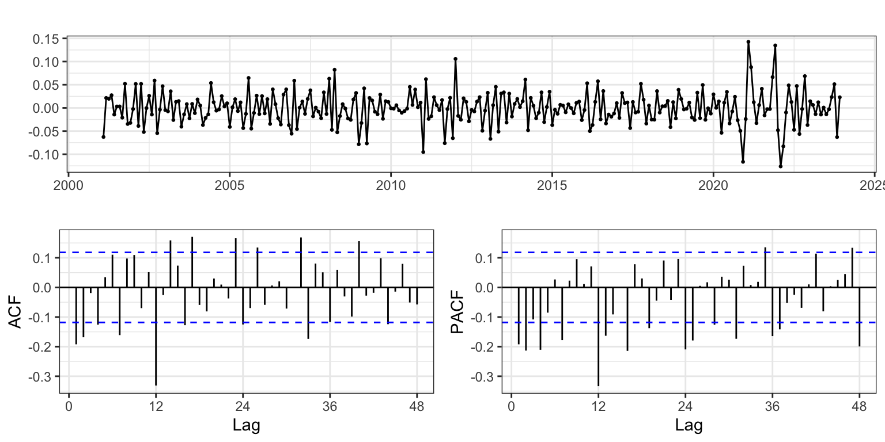
Analizando la FAC y la FACP (Figura 6) observamos que no es fácil la identificación.
¿Qué nos indica auto.arima? Primero vamos a generar e incluir en el proceso de autoidentificación las variables asociadas a los efectos de intervención que hemos detectado en los temas previos. En concreto, hemos visto que el número de días del mes explica el número de nacimientos. Este efecto era muy claro para los meses de febrero bisiestos. Para el calculo de la variable que recoge el número de días del mes usaremos la función monthdays de la librería forecast que devuelve el número de días de cada mes o trimestre de una serie.
monthdays(nacimientos) Jan Feb Mar Apr May Jun Jul Aug Sep Oct Nov Dec
2000 31 29 31 30 31 30 31 31 30 31 30 31
2001 31 28 31 30 31 30 31 31 30 31 30 31
2002 31 28 31 30 31 30 31 31 30 31 30 31
2003 31 28 31 30 31 30 31 31 30 31 30 31
2004 31 29 31 30 31 30 31 31 30 31 30 31Por otro lado, los periodos vacacionales pueden afectar la programación de las cesáreas e influir en el número de nacimientos. Como la Semana Santa es un periodo festivo que puede caer en marzo o abril, dependiendo del año, los nacimientos en estos dos meses pueden variar según como cae la Semana Santa. Para capturar este efecto, usaremos la función easter de la librería forecast que devuelve para cada mes la proporción de días de la Semana Santa que contiene (considerando solo del Viernes Santo al Domingo de Resurrección, tres días).
easter(nacimientos) Jan Feb Mar Apr May Jun Jul Aug Sep Oct Nov Dec
2015 0.00 0.00 0.00 1.00 0.00 0.00 0.00 0.00 0.00 0.00 0.00 0.00
2016 0.00 0.00 1.00 0.00 0.00 0.00 0.00 0.00 0.00 0.00 0.00 0.00
2017 0.00 0.00 0.00 1.00 0.00 0.00 0.00 0.00 0.00 0.00 0.00 0.00
2018 0.00 0.00 0.67 0.33 0.00 0.00 0.00 0.00 0.00 0.00 0.00 0.00
2019 0.00 0.00 0.00 1.00 0.00 0.00 0.00 0.00 0.00 0.00 0.00 0.00Además, vimos en el tema de Alisado que en enero de 2011, diciembre de 2020 y febrero y marzo de 2021 el número de nacimientos era atípico.
DiasMes <- monthdays(nacimientos)
SemanaSanta <- easter(nacimientos)
fechas <- format(seq(as.Date("2000-1-1"), as.Date("2025-06-1"), "month"), "%Y-%m")
d0111 <- 1*(fechas == "2011-01")
d1220 <- 1*(fechas == "2020-12")
d0221 <- 1*(fechas == "2021-02")
d0321 <- 1*(fechas == "2021-03")
auto.arima(nacimientos,
d = 1,
D = 1,
lambda = 0,
xreg = cbind(DiasMes, SemanaSanta,
d0111, d1220, d0221, d0321))Series: nacimientos
Regression with ARIMA(0,1,1)(0,1,2)[12] errors
Box Cox transformation: lambda= 0
Coefficients:
ma1 sma1 sma2 DiasMes SemanaSanta d0111 d1220 d0221
-0.4015 -0.7175 -0.1102 0.0321 -0.0116 -0.0721 -0.1111 0.0337
s.e. 0.0713 0.0607 0.0589 0.0078 0.0049 0.0188 0.0211 0.0218
d0321
0.0741
s.e. 0.0198
sigma^2 = 0.0005661: log likelihood = 678.68
AIC=-1337.37 AICc=-1336.59 BIC=-1300.57Indica el modelo, \(ARIMA_{12}(0,1,1)(0,1,2)\), donde el coeficiente sma2 no parece ser significativo. Si esto es así, estaríamos ante el modelo de la aerolíneas. Por otro lado, parece que casi todos los coeficientes del modelo asociados a las variables de intervención son significativas.
Una alternativa a auto.arima es la función seas de la librería seasonal. La función seas tiene como ventajas que también analiza automáticamente la conveniencia de usar la transformación logarítmica, que identifica posibles efectos calendario y valores extremos, y que suele ser más parsimoniosa que auto.arima. Su desventaja es que sólo se puede aplicar para series mensuales o trimestrales.
La aplicación de seas sobre la serie indica que no es necesaria la transformación logarítmica así que solicitamos la identificación automática forzando la transformación. Veamos que identificación ofrece seas:
#summary(seas(nacimientos))
summary(seas(nacimientos, transform.function = "log"))
Call:
seas(x = nacimientos, transform.function = "log")
Coefficients:
Estimate Std. Error z value Pr(>|z|)
Weekday 0.0027386 0.0002503 10.943 < 2e-16 ***
Easter[1] -0.0088432 0.0035895 -2.464 0.0138 *
AO2010.Dec 0.0660688 0.0137365 4.810 1.51e-06 ***
AO2020.Nov -0.0773159 0.0150703 -5.130 2.89e-07 ***
AO2020.Dec -0.2174839 0.0159940 -13.598 < 2e-16 ***
AO2021.Jan -0.1800358 0.0160473 -11.219 < 2e-16 ***
AO2021.Feb -0.0624484 0.0150596 -4.147 3.37e-05 ***
MA-Nonseasonal-01 0.4149448 0.0524267 7.915 2.48e-15 ***
MA-Seasonal-12 0.7536275 0.0397069 18.980 < 2e-16 ***
---
Signif. codes: 0 '***' 0.001 '**' 0.01 '*' 0.05 '.' 0.1 ' ' 1
SEATS adj. ARIMA: (0 1 1)(0 1 1) Obs.: 306 Transform: log
AICc: 4607, BIC: 4643 QS (no seasonality in final): 0
Box-Ljung (no autocorr.): 19.74 Shapiro (normality): 0.9936 En primer lugar, la función identifica el modelo de las aerolíneas con la transformación logarítmica de Nacimientos. Además, un efecto calendario Semana Santa, un efecto calendario días laborables del mes (que podemos entender similar a nuestro efecto días del mes) y cinco meses atípicos en diciembre de 2010, noviembre y diciembre de 2020, y enero y febrero de 2021.
Tras las dos autoidentificaciones complementarias, decidimos que la identificación de partida es \(ARIMA_{12}(0,1,1)(0,1,1) + AI\), donde AI recoge las variables de intervención incluidas en auto.arima y seas.
Estimación (y valores extremos)
Vamos a estimar el modelo identificado, incluidas las nuevas variables de intervención identificadas con la función seas.
d1210 <- 1*(fechas == "2010-12")
d1120 <- 1*(fechas == "2020-11")
d0121 <- 1*(fechas == "2021-01")
nac.ar1 <- Arima(nacimientos,
order = c(0, 1, 1),
seasonal = c(0, 1, 1),
lambda = 0,
xreg = cbind(DiasMes, SemanaSanta,
d1210, d0111, d1120, d1220,
d0121, d0221, d0321))
nac.ar1Series: nacimientos
Regression with ARIMA(0,1,1)(0,1,1)[12] errors
Box Cox transformation: lambda= 0
Coefficients:
ma1 sma1 DiasMes SemanaSanta d1210 d0111 d1120 d1220
-0.5501 -0.7601 0.0323 -0.0124 0.0661 -0.054 -0.0824 -0.2049
s.e. 0.0493 0.0387 0.0070 0.0046 0.0170 0.017 0.0177 0.0183
d0121 d0221 d0321
-0.1894 -0.0570 0.0226
s.e. 0.0186 0.0185 0.0177
sigma^2 = 0.0004156: log likelihood = 726.57
AIC=-1429.14 AICc=-1428.03 BIC=-1384.98Ya tenemos un modelo de partida, aunque parece que el coeficiente de la intervención en marzo de 2021 no es significativo. Veamos si es necesaria más intervención. Dado el elevado número de datos de la serie, es fácil que aparezcan errores elevados debido al azar y no a una causa externa. Por este motivo, vamos a trabajar con el umbral de 3 a la hora de identificar nuevos valores extremos.1
error <- residuals(nac.ar1)
sderror <- sd(error)
autoplot(error, series="Error",
colour = "black",
xlab = "",
ylab = "Error",
main = "") +
geom_hline(yintercept = c(-3, 3)*sderror,
colour = c("red", "red"),
lty = 2) +
scale_x_continuous(breaks= seq(2000, 2026, 2))
fechas[abs(error) > 3 * sderror][1] "2016-04"
Solo se observa un candidato a valor atípico, abril de 2016. Dado que se desconoce qué pudo pasar ese mes para que resulte atípico y que un valor atípico entra dentro de lo probable por mero azar, no crearemos una variable asociada a este mes. Además, vamos a excluir la variable de intervención de marzo de 2021 que no era significativa.
nac.ar2 <- Arima(nacimientos,
order = c(0, 1, 1),
seasonal = c(0, 1, 1),
lambda = 0,
xreg = cbind(DiasMes, SemanaSanta,
d1210, d0111, d1120,
d1220, d0121, d0221))
nac.ar2Series: nacimientos
Regression with ARIMA(0,1,1)(0,1,1)[12] errors
Box Cox transformation: lambda= 0
Coefficients:
ma1 sma1 DiasMes SemanaSanta d1210 d0111 d1120 d1220
-0.5483 -0.7614 0.0322 -0.0129 0.0661 -0.0541 -0.0854 -0.2093
s.e. 0.0496 0.0386 0.0070 0.0046 0.0171 0.0170 0.0175 0.0181
d0121 d0221
-0.1952 -0.0642
s.e. 0.0181 0.0177
sigma^2 = 0.0004163: log likelihood = 725.76
AIC=-1429.51 AICc=-1428.57 BIC=-1389.03Compensación
Podemos observar que en todos los modelos estimados los coeficientes de las variables de intervención de los meses consecutivos diciembre de 2010 y enero de 2011 son similares pero de signo opuesto. A este tipo de intervención se le denomina compensación: el efecto extraordinario en un periodo se compensa con un efecto de similar magnitud pero signo opuesto en el periodo siguiente. La causa detrás de esta compensación puede ser tan prosaica como que por error muchos nacimientos ocurridos en enero de 2011 se asignaron informáticamente a diciembre de 2010. O quizás algo pasó en esos meses que adelantó un número considerable de nacimientos.
Vamos a crear una variable de intervención asociada a esta compensación. Es tan sencillo como definir una variable ficticia que valga cero siempre excepto para los meses de diciembre de 2010 y enero de 2011 que valdrá 1 y - 1 respectivamente.
# Creacion del la compensacion
d12100111 <- d1210 - d0111Respecto al efecto de la pandemia en la serie, las dos intervenciones asociadas al inicio y final del efecto (noviembre de 2020 y febrero de 2021) tienen un valor similar, y las dos intervenciones asociadas al corazón del efecto (diciembre de 2020 y enero de 2021) también tienen un valor parecido. En este caso las dos variables ficticias que vamos a crear deben valer cero siempre excepto para dos meses que valdrán 1. La primera variable valdrá 1 en noviembre de 2020 y febrero de 2021, y la segunda variable valdrá 1 en diciembre de 2020 y enero de 2021.
# Variables de intervencion asociadas a la Covid-19
d11200221 <- d1120 + d0221
d12200121 <- d1220 + d0121Ahora vamos a sustituir las seis variables ficticias d1210, d0111, d1120, d1220, d0121 y d0221 del modelo por las nuevas variables d12100111, d11200221 y d12200121.
nac.ar3 <- Arima(nacimientos,
order = c(0, 1, 1),
seasonal = c(0, 1, 1),
lambda = 0,
xreg = cbind(DiasMes, SemanaSanta,
d12100111, d11200221, d12200121))
nac.ar3Series: nacimientos
Regression with ARIMA(0,1,1)(0,1,1)[12] errors
Box Cox transformation: lambda= 0
Coefficients:
ma1 sma1 DiasMes SemanaSanta d12100111 d11200221 d12200121
-0.5420 -0.7629 0.0318 -0.0128 0.0601 -0.0749 -0.2023
s.e. 0.0496 0.0385 0.0070 0.0046 0.0105 0.0134 0.0147
sigma^2 = 0.0004138: log likelihood = 725.06
AIC=-1434.13 AICc=-1433.62 BIC=-1404.69Los coeficientes estimados en este modelo son prácticamente iguales a los obtenidos en el modelo previo.
Validación
Coeficientes
Veamos si todos los coeficientes del modelo son significativos.
coeftest(nac.ar3)
z test of coefficients:
Estimate Std. Error z value Pr(>|z|)
ma1 -0.5420213 0.0495541 -10.9380 < 2.2e-16 ***
sma1 -0.7628787 0.0385188 -19.8054 < 2.2e-16 ***
DiasMes 0.0317655 0.0069671 4.5593 5.132e-06 ***
SemanaSanta -0.0128472 0.0045937 -2.7967 0.005163 **
d12100111 0.0601140 0.0105257 5.7111 1.122e-08 ***
d11200221 -0.0749059 0.0134142 -5.5841 2.350e-08 ***
d12200121 -0.2023358 0.0147066 -13.7581 < 2.2e-16 ***
---
Signif. codes: 0 '***' 0.001 '**' 0.01 '*' 0.05 '.' 0.1 ' ' 1Todos los coeficientes son significativos al 5%.
Medidas de bondad de ajuste
El error medio de -55, muy bajo en comparación con el valor medio de la serie, y el MPE de -0.16 indican que no hay sesgo. Además, el valor tan reducido de ACF1 indica que las previsiones por intervalo estarán correctamente calculadas.
En media nos equivocamos en 701 nacimientos (RMSE) y el error porcentual medio es del 1.6%.
accuracy(nac.ar3) ME RMSE MAE MPE MAPE MASE ACF1
Training set -55.33 701.46 546.21 -0.16 1.56 0.41 0.01
Error de predicción extra-muestral según horizonte temporal
Asumimos que se precisan quince años para hacer una buena estimación, \(k = 180\), y fijaremos el horizonte temporal en un año, \(h = 12\) meses.
El código es aun más complejo que el visto en el tema previo. Por un lado, hemos de tener en cuenta que hay variables de intervención de efecto calendario y por otro lado que la función Arima podría fallar en el proceso de estimación.
k <- 180
h <- 12
T <- length(nacimientos)
s<-T - k - h
mapeArima <- matrix(NA, s + 1, h)
X <- data.frame(cbind(DiasMes, SemanaSanta))
for (i in 0:s) {
train.set <- subset(nacimientos, start = i + 1, end = i + k)
test.set <- subset(nacimientos, start = i + k + 1, end = i + k + h)
X.train <- as.matrix(X[(i + 1):(i + k),])
X.test <- as.matrix(X[(i + k + 1):(i + k + h),])
fit <- try(Arima(train.set,
order = c(0, 1, 1),
seasonal = c(0, 1, 1),
lambda = 0,
xreg = X.train))
if(!is.element("try-error", class(fit))) {
fcast <- forecast(fit, h = h, xreg = X.test)
mapeArima[i + 1,] <- 100*abs(test.set - fcast$mean)/test.set
}
}Como para el cálculo de los errores de predicción no se ha tenido en cuenta la intervención no sujeta a afectos calendario (la compensación a finales de 2010, la Covid-19…), vamos a obtener el error mediano como medida de precisión.
errorArima <- apply(mapeArima, MARGIN = 2, FUN = median, na.rm = TRUE)
errorArima [1] 1.424007 1.471345 1.763494 1.928600 1.982522 1.830978 2.124116 2.175056
[9] 2.155018 2.081567 1.862215 2.194894ggplot() +
geom_line(aes(x = 1:12, y = errorArima), colour = "Blue") +
labs(x = "Horizonte temporal de predicción", y = "", title = "") +
scale_x_continuous(breaks= 1:12)
La Figura 8 revela que el error de predicción aumenta según aumenta el horizonte de predicción, pero incluso a un año vista, se mantiene cercano al 2%.
Incorrelación, Homocedasticidad y Normalidad
Veamos ahora si el residuo es ruido blanco.
error <- residuals(nac.ar3)
Box.test(error, lag = 2, type = "Ljung-Box")
Box-Ljung test
data: error
X-squared = 0.47865, df = 2, p-value = 0.7872Box.test(error, lag = 24, type = "Ljung-Box")
Box-Ljung test
data: error
X-squared = 141.79, df = 24, p-value < 2.2e-16Box.test(error^2, lag = 2, type = "Ljung-Box")
Box-Ljung test
data: error^2
X-squared = 3.3031, df = 2, p-value = 0.1917Box.test(error^2, lag = 24, type = "Ljung-Box")
Box-Ljung test
data: error^2
X-squared = 30.221, df = 24, p-value = 0.1775jarque.bera.test(error)
Jarque Bera Test
data: error
X-squared = 0.41894, df = 2, p-value = 0.811ggAcf(error, lag = 36, ylim = c(-0.3, 0.3), main = "")
Claramente hay autocorrelaciones significativas, pero en retardos no relevantes (véase Figura 9). El error muestra ser homocedástico y seguir una distribución normal.
Interpretación
El modelo teórico es \(log(nacimientos) \sim ARIMA_{12}(0, 1, 1)(0, 1, 1) + AI\),
\[(1 - L^{12})(1 - L)\log(nacimientos_t) = (1 + \theta_1 L)(1 + \theta_{12} L^{12})\varepsilon_t + AI.\]
Si sustituimos \((1 - L^{12})\log(nacimientos_t)\) por \(TVA\_nac_t\), la tasa de variación anual de los nacimientos, y desarrollamos queda \[ \begin{aligned} TVA\_nac_t = & TVA\_nac_{t - 1} + \theta_1 \varepsilon_{t-1} + \theta_{12} \varepsilon_{t-12} + \theta_1\theta_{12} \varepsilon_{t-13} + \varepsilon_{t}+ \\ & \gamma_1 \cdot DiasMes_t + \gamma_2 \cdot SemanaSanta + \\ & \gamma_3 \cdot d12100111_t + \gamma_4 \cdot d11200221_t + \gamma_5 \cdot d12200121_t. \end{aligned} \]
Finalmente, el modelo estimado es, \[ \begin{aligned} \widehat{TVA}\_nac_t = & TVA\_nac_{t-1} - 0.54\varepsilon_{t-1} - 0.76\varepsilon_{t-12} + 0.41\varepsilon_{t-13} + \\ & 0.032 \cdot DiasMes_t - 0.013 \cdot SemanaSanta + \\ & + 0.060 \cdot d12100111_t - 0.075 \cdot d11200221_t - 0.20 \cdot d12200121_t. \end{aligned} \]
En cada mes, la tasa de variación anual de los nacimientos es la misma que la del mes pasado (\(\widehat{TVA}\_nac_t = TVA\_nac_{t-1}\)).
Además, si algunos de los meses necesarios para predecir fue anómalo, el error hay que tenerlo en cuenta para afinar la previsión.
Respecto de los efectos calendario, cada día adicional de un mes se incrementan los nacimientos un 3.2%. El mes en que cae la Semana Santa los nacimientos caen un 1.3%.
En diciembre de 2010 hubo un 6% más de nacimientos de lo esperado que fue compensado en enero de 2011.
Respecto de la pandemia, nueve meses después del confinamiento hubo una reducción transitoria en el número de nacimientos. En concreto, en noviembre de 2020 se redujeron un 7.5% y en los dos meses siguientes la caída fue de un 20%. En febrero de 2021 los nacimientos se recuperaron parcialmente y la caída fue del 7.5%. A partir de marzo de 2021 los nacimientos recuperaron los valores prepandemia.
Predicción de la serie
Una vez dado por válido el modelo podemos pasar a realizar predicciones. Hay que tener en cuenta que hay cinco variables de intervención. Para las dos que son efectos calendario (DiasMes y SemanaSanta) debemos indicar qué valores tomarán en el periodo de predicción. Vamos a fijar el horizonte de predicción desde julio de 2025 hasta diciembre de 2029, 54 meses y mostrar los resultados numéricamente (solo para el primer año) y gráficamente (Figura 10).
tmp <- ts(rep(0, 54), start = c(2025, 7), freq = 12)
pdm <- monthdays(tmp)
pss <- easter(tmp)
pnac.ar3 <- forecast(nac.ar3,
h = 54,
xreg = cbind(pdm, pss,
rep(0,54), rep(0,54), rep(0,54)),
level = 95)
pnac.ar3 Point Forecast Lo 95 Hi 95
Jul 2025 27903.51 26812.87 29038.50
Aug 2025 27934.65 26736.11 29186.92
Sep 2025 27690.77 26406.14 29037.89
Oct 2025 28340.07 26933.90 29819.66
Nov 2025 27035.00 25612.09 28536.96
Dec 2025 26748.36 25264.62 28319.22
Jan 2026 26768.21 25211.42 28421.13
Feb 2026 24064.03 22602.93 25619.57
Mar 2026 26238.46 24581.17 28007.49
Apr 2026 24892.97 23262.27 26637.98
May 2026 25856.65 24104.48 27736.19
Jun 2026 25659.49 23864.85 27589.09autoplot(pnac.ar3,
ylab = "Nacimientos",
main = "") +
scale_x_continuous(breaks= seq(2000, 2030, 2))
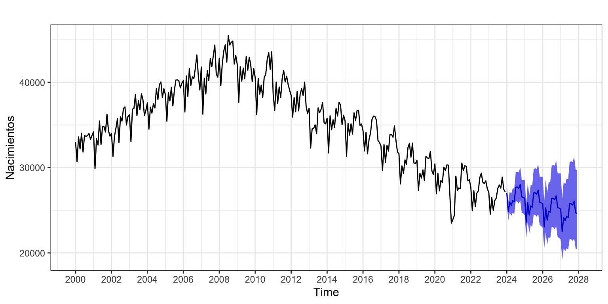
3.2 Exportaciones
Consideremos la serie de exportaciones de bienes desde España hacía la UE27 (conjunto de 27 países de la Unión Europea, con Reino Unido ya ha excluido). La serie va de enero de 1999 hasta julio de 2025 y está en millones de euros.
exportaciones <- read.csv("./series/Exportaciones.csv",
header = TRUE)
exportaciones <- ts(exportaciones,
start = c(1999, 1),
freq = 12)
autoplot(exportaciones,
xlab = "",
ylab = "Millones de €",
main = "")
Transformación de la serie
La Figura 11 deja claro que la serie debe ser diferenciada para ser estacionaria. También muestra dos periodos con una marcada intervención: durante la Gran Recesión (2008-2014) y durante el periodo más duro de la Covid-19 en el año 2020. Además, por la naturaleza de la serie es previsible que exista un efecto días del mes o días laborables y un efecto Semana Santa.
Por otro lado, la Figura 11 muestra que la serie tiene un esquema multiplicativo, así que trabajaremos con la transformación logarítmica.
ggAcf(log(exportaciones), lag = 48, ylim = c(-1, 1))
ggAcf(diff(log(exportaciones)), lag = 48, ylim = c(-1, 1))
ggAcf(diff(log(exportaciones), lag = 12), lag = 48, ylim = c(-1, 1))
ggAcf(diff(diff(log(exportaciones), lag = 12)), lag = 48, ylim = c(-1, 1))
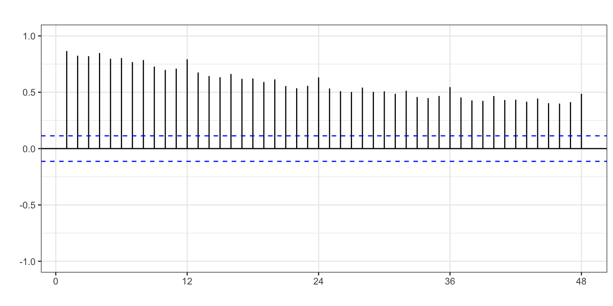


ndiffs(log(exportaciones))[1] 1nsdiffs(log(exportaciones)) [1] 1El análisis de la Figura 12 revela la necesidad de la doble diferenciación, que es confirmada por las funciones ndiffs y nsdiffs. Concluimos que para que la serie sea estacionaria y ergódica es necesaria la doble diferenciación regular y estacional. Es decir, trabajaremos con la siguiente serie transformada \[\nabla\nabla_{12}\log(exportaciones_t) \sim I(0)I_{12}(0).\]
Identificación
Si probamos con la función auto.arima, indicando la doble diferenciación y añadiendo el efecto de los días del mes y la Semana Santa, nos sugiere \(ARIMA_{12}(1,1,1)(2,1,2)\). Demasiado complejo.
Veamos qué nos indica seas.
summary(seas(exportaciones))
Call:
seas(x = exportaciones)
Coefficients:
Estimate Std. Error z value Pr(>|z|)
Mon -0.001609 0.003777 -0.426 0.67016
Tue 0.015174 0.003731 4.067 4.75e-05 ***
Wed 0.008041 0.003729 2.157 0.03103 *
Thu 0.011527 0.003702 3.114 0.00185 **
Fri 0.010624 0.003706 2.866 0.00415 **
Sat -0.016715 0.003675 -4.548 5.42e-06 ***
Easter[1] -0.068249 0.007398 -9.226 < 2e-16 ***
LS2008.Dec -0.187822 0.030765 -6.105 1.03e-09 ***
AO2020.Mar -0.168210 0.030511 -5.513 3.52e-08 ***
AO2020.Apr -0.495703 0.031731 -15.622 < 2e-16 ***
AO2020.May -0.268054 0.030502 -8.788 < 2e-16 ***
MA-Nonseasonal-01 0.402403 0.051656 7.790 6.70e-15 ***
MA-Seasonal-12 0.662797 0.043115 15.373 < 2e-16 ***
---
Signif. codes: 0 '***' 0.001 '**' 0.01 '*' 0.05 '.' 0.1 ' ' 1
SEATS adj. ARIMA: (0 1 1)(0 1 1) Obs.: 319 Transform: log
AICc: 4596, BIC: 4647 QS (no seasonality in final): 0
Box-Ljung (no autocorr.): 42.95 * Shapiro (normality): 0.9965
Messages generated by X-13:
Warnings:
- At least one visually significant trading day peak has been
found in one or more of the estimated spectra.El modelo identificado es el de las aerolíneas para la transformación logarítmica de Exportaciones. Respecto de la intervención, identifica varios efectos calendario: seis asociados a cada día laborable de lunes a sábado, y otro a la Semana Santa. También se identifican cuatro intervenciones no asociadas a efectos calendario: tres pulsos –intervenciones que afectan un solo mes (AO)– y un cambio permanente –intervención que afectan un rango elevado de meses (LS):
- Asociados a la Covid-19 están los pulsos de marzo, abril y mayo de 2020.
- El cambio permanente empieza en diciembre de 2008 y el coeficiente estimado es negativo. Es decir, la Gran Recesión generó una caída permanente de las exportaciones españolas a la UE27.
Estimación (y valores extremos)
Vamos a estimar el modelo identificado con seas, incluidas las variables de intervención. A este respecto unas palabras sobre como obtener los días laborables de un mes.
Entenderemos por días laborables los lunes a viernes de cada mes, menos los días festivos. Un inconveniente de este efecto es que los festivos que afectan a una serie dependen de su naturaleza y ámbito geográfico. Por ejemplo, en Estados Unidos el día del trabajador se celebra el primer lunes de septiembre, en Reino Unido el primer lunes de mayo y en España el 1 de mayo. Además, para la serie de transporte de pasajeros urbanos de Valencia los festivos relevantes serán diferentes que para la misma serie para Madrid.
Para el ámbito geográfico nacional, los días laborables se puede obtener con la función bizdays. Esta función devuelve el número de días laborables de cada mes para determinados centros financieros (equivalentes a países). Por proximidad geográfica, usaremos el calendario de Londres para España.2
DiasLaborables <- bizdays(exportaciones, FinCenter = "London")
SemanaSanta <- easter(exportaciones)Para los pulsos, que solo afectan un mes, se crea una variable que vale cero excepto para el mes a intervenir que vale 1.
fechas <- format(seq(as.Date("1999-01-01"), as.Date("2025-07-01"), "month"), "%Y-%m")
d0320 <- 1*(fechas == "2020-03")
d0420 <- 1*(fechas == "2020-04")
d0520 <- 1*(fechas == "2020-05")Para el cambio permanente que afectan desde un mes en adelante, se crea una variable que vale cero antes del mes de inicio de la intervención y 1 desde ese mes en adelante.
l1208 <- 1*(fechas > "2008-11")Estimamos el modelo de partida, en el que parece que todos los coeficientes son significativos.
exp.ar1 <- Arima(exportaciones,
order = c(0, 1, 1),
seasonal = c(0, 1, 1),
lambda = 0,
xreg = cbind(DiasLaborables, SemanaSanta,
l1208, d0320, d0420, d0520))
exp.ar1Series: exportaciones
Regression with ARIMA(0,1,1)(0,1,1)[12] errors
Box Cox transformation: lambda= 0
Coefficients:
ma1 sma1 DiasLaborables SemanaSanta l1208 d0320 d0420
-0.4572 -0.6832 0.0314 -0.0219 -0.1958 -0.1802 -0.4991
s.e. 0.0451 0.0451 0.0018 0.0090 0.0321 0.0327 0.0338
d0520
-0.2638
s.e. 0.0330
sigma^2 = 0.001573: log likelihood = 553.8
AIC=-1089.6 AICc=-1088.99 BIC=-1056.09Veamos si es necesaria más intervención.
error <- residuals(exp.ar1)
sderror <- sd(error)
autoplot(error, series="Error",
colour = "black",
xlab = "",
ylab = "Error",
main = "") +
geom_hline(yintercept = c(-3, -2,2, 3)*sderror,
colour = c("red", "green", "green", "red"),
lty = 2) +
scale_x_continuous(breaks= seq(1999, 2025, 2))
Se observan algunos candidatos a valores atípicos por superar el error las 2.5 desviaciones típicas, pero ninguna alcanza las 3 desviaciones típicas. Por tanto, no se van a incluir más variables de intervención.
Validación
Coeficientes significativos
Veamos si los coeficientes del modelo son significativos. Para ello, aplicamos la prueba z.
coeftest(exp.ar1)
z test of coefficients:
Estimate Std. Error z value Pr(>|z|)
ma1 -0.4571716 0.0450707 -10.1434 < 2.2e-16 ***
sma1 -0.6832458 0.0451119 -15.1456 < 2.2e-16 ***
DiasLaborables 0.0314312 0.0018308 17.1682 < 2.2e-16 ***
SemanaSanta -0.0218979 0.0090384 -2.4228 0.0154 *
l1208 -0.1958303 0.0321333 -6.0943 1.099e-09 ***
d0320 -0.1801776 0.0327318 -5.5047 3.699e-08 ***
d0420 -0.4991418 0.0337858 -14.7737 < 2.2e-16 ***
d0520 -0.2638271 0.0329901 -7.9972 1.273e-15 ***
---
Signif. codes: 0 '***' 0.001 '**' 0.01 '*' 0.05 '.' 0.1 ' ' 1Todos los coeficientes son significativos.
Medidas de bondad de ajuste
En media nos equivocamos en 530 millones de euros (RMSE) y el error porcentual medio es del 2.9%, muy reducido.
La serie no presenta sesgo y el intervalo de confianza para las predicciones es válido.
accuracy(exp.ar1) ME RMSE MAE MPE MAPE MASE ACF1
Training set -33.25 529.85 366.78 -0.35 2.94 0.34 -0.1Error de predicción extramuestral según horizonte temporal
Asumimos que se precisan diez años para hacer una buena estimación, \(k = 120\), y fijaremos el horizonte temporal en un año, \(h = 12\) meses. Usaremos como criterio de calidad el MedAPE (error mediano) para evitar el efecto sobre los errores de predicción de la no inclusión de las variables ficticias no asociadas a efectos calendario.
k <- 120
h <- 12
T <- length(exportaciones)
s <- T - k - h
mapeArima <- matrix(NA, s + 1, h)
X <- data.frame(cbind(DiasLaborables, SemanaSanta))
for (i in 0:s) {
train.set <- subset(exportaciones, start = i + 1, end = i + k)
test.set <- subset(exportaciones, start = i + k + 1, end = i + k + h)
X.train <- as.matrix(X[(i + 1):(i + k),])
X.test <- as.matrix(X[(i + k + 1):(i + k + h),])
fit <- try(Arima(train.set,
order = c(0, 1, 1),
seasonal = c(0, 1, 1),
lambda = 0,
xreg = X.train))
if(!is.element("try-error", class(fit))) {
fcast <- forecast(fit, h = h, xreg = X.test)
mapeArima[i + 1,] <- 100*abs(test.set - fcast$mean)/test.set
}
}
errorArima <- apply(mapeArima, MARGIN = 2, FUN = median, na.rm = TRUE)
errorArima [1] 2.652815 2.615755 2.987029 3.479416 3.681393 4.182916 4.902910 5.067910
[9] 5.060069 4.888785 5.385392 5.521236La Figura 14 revela que el error de predicción aumenta lentamente según aumenta el horizonte de predicción, pasando del 2.6% a un mes vista hasta el 5.5% a 12 meses vista.
ggplot() +
geom_line(aes(x = 1:12, y = errorArima), colour = "Blue") +
labs(x = "Horizonte temporal de predicción", y = "", title = "") +
scale_x_continuous(breaks= 1:12)
Incorrelación, Homocedasticidad y Normalidad
Veamos ahora si el residuo es ruido blanco.
Box.test(error, lag = 2,type = "Ljung-Box")
Box-Ljung test
data: error
X-squared = 1.5401, df = 2, p-value = 0.463Box.test(error, lag = 24,type = "Ljung-Box")
Box-Ljung test
data: error
X-squared = 38.304, df = 24, p-value = 0.03226Box.test(error^2, lag = 2, type = "Ljung-Box")
Box-Ljung test
data: error^2
X-squared = 4.5829, df = 2, p-value = 0.1011Box.test(error^2, lag = 24, type = "Ljung-Box")
Box-Ljung test
data: error^2
X-squared = 68.84, df = 24, p-value = 3.272e-06jarque.bera.test(error)
Jarque Bera Test
data: error
X-squared = 0.45772, df = 2, p-value = 0.7954El error muestra ser incorrelado (al menos al 1%) y seguir una distribución normal. Sin embargo, el error es heterocedástico. Es posible que un análisis más detallado de la intervención corrija este problema. Si no es así, habría que optar por un modelo que no asuma la hipótesis de homocedasticidad. En cualquier caso, la falta de homocedasticidad en el error del modelo no afecta a la consistencia de la predicciones, pero si al cálculo del intervalo de confianza.
Interpretación
La parte regular del modelo estimado es la misma que la obtenida para la serie Nacimientos y su interpretación es, por tanto, idéntica: en cada mes, la tasa de variación anual de las exportaciones es la misma que la del mes pasado. Además, si algunos de los meses necesarios para predecir fue anómalo, el error hay que tenerlo en cuenta para afinar la previsión.
Vamos por tanto a centrarnos en la interpretación de la intervención:
- Cada día laborable adicional en un mes aumenta las exportaciones en un 3.1%.
- El mes en que cae la Semana Santa las exportaciones caen un 2.2%.
- A raíz de la Gran Recesión, las exportaciones se redujeron de forma permanente un 19.6% desde diciembre de 2008. Es decir, sin la Gran Recesión, las exportaciones ahora serían un 19.6% superiores.
- A raíz de la Covid-19, las exportaciones se redujeron de forma temporal en los meses de marzo, abril y mayo de 2020 un 18%, 50% y 26%, respectivamente.
Predicción de la serie
Una vez dado por válido el modelo, podemos pasar a realizar predicciones teniendo en cuenta las seis variables de intervención:
- Dos de ellas son efectos calendario (DiasLaborables y SemanaSanta), para las que debemos indicar qué valores tomarán en el periodo de predicción
- Otra es un cambio permanente y su valor debe ser 1 en el futuro.
- Para los dos pulsos se fijará un valor futuro de 0.
Vamos a fijar el horizonte de predicción desde agosto de 2025 hasta diciembre de 2028 (41 meses) y mostrar los resultados numérica (solo para el primer año) y gráficamente (Figura 15).
Recuerda siempre incluir las variables ficticias en la función forecast en el mismo orden que aparecen en la estimación con Arima.
tmp <- ts(rep(0, 41), start = c(2025, 8), freq = 12)
pdl <- bizdays(tmp, FinCenter = "London")
pss <- easter(tmp)
pexp.ar1 <- forecast(exp.ar1,
h = 41,
xreg = cbind(pdl, pss,
rep(1,41),
rep(0,41), rep(0,41), rep(0,41)),
level = 95)
pexp.ar1 Point Forecast Lo 95 Hi 95
Aug 2025 15699.97 14525.79 16969.07
Sep 2025 22101.47 20230.60 24145.35
Oct 2025 22298.97 20217.39 24594.87
Nov 2025 21264.82 19112.80 23659.15
Dec 2025 20452.05 18235.07 22938.57
Jan 2026 20572.85 18205.48 23248.06
Feb 2026 21137.64 18573.36 24055.94
Mar 2026 24062.72 21002.20 27569.23
Apr 2026 21363.10 18527.10 24633.21
May 2026 22037.24 18995.16 25566.50
Jun 2026 23478.34 20118.75 27398.94
Jul 2026 21959.46 18710.98 25771.91autoplot(pexp.ar1,
xlab = "",
ylab = "Millones de euros",
main = "",
PI = FALSE) +
scale_x_continuous(breaks= seq(1999, 2029, 2)) 
3.3 Demanda eléctrica
Consideremos las serie diaria de demanda eléctrica (GWh) en España durante 2024.
electricidad <- read.csv("./series/Consumo electrico.csv",
header = TRUE)
electricidad <- ts(electricidad[, 1],
start = c(1, 1),
frequency = 7)
autoplot(electricidad,
xlab = "",
ylab = "GWh",
main = "")Transformación de la serie
Estrictamente hablando la serie no muestra tendencia, porque solo podemos observar un año. Sin embargo, se observan cambios de nivel en la demanda eléctrica que se pueden confundir con la presencia de tendencia, pero que realmente están asociados a los cambios de temperatura y el uso de los sistemas de climatización. Estos cambios de nivel se repiten cada año y se deberían incorporar en la estructura de la serie como una segunda componente estacional. Ahora bien, dado que solo se está analizando un año de la serie, vamos a asimilar los cambios de nivel a la presencia de tendencia y a considerar, por tanto, la serie como no estacionaria.
ggAcf(electricidad, lag = 42, ylim = c(-1, 1))
ggAcf(diff(electricidad), lag = 42, ylim = c(-1, 1))
ggAcf(diff(electricidad, lag = 7), lag = 42, ylim = c(-1, 1))
ggAcf(diff(diff(electricidad, lag = 7)), lag = 42, ylim = c(-1, 1))
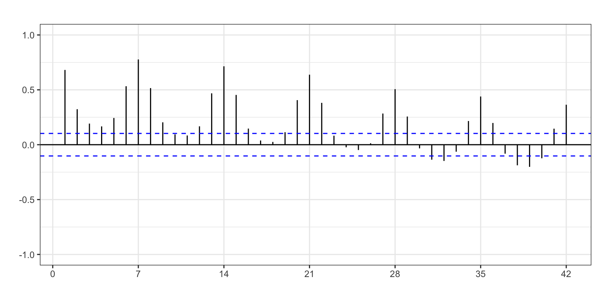
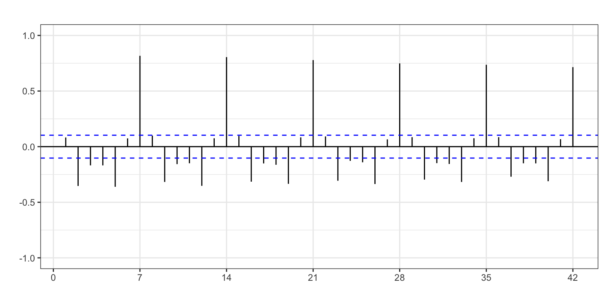
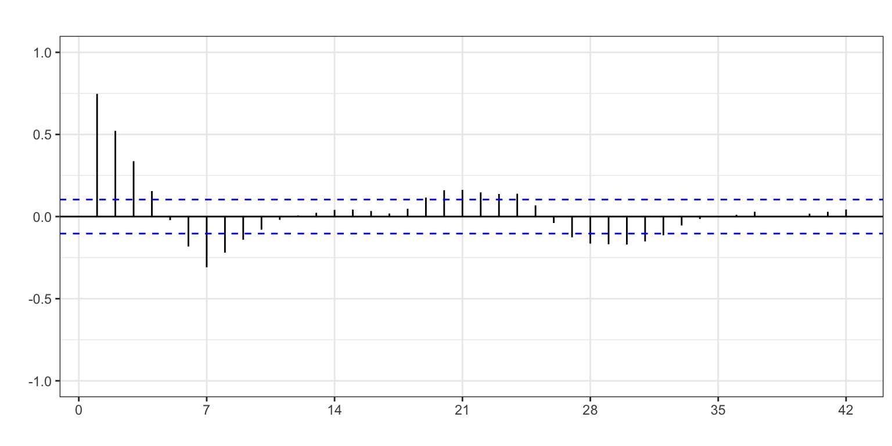
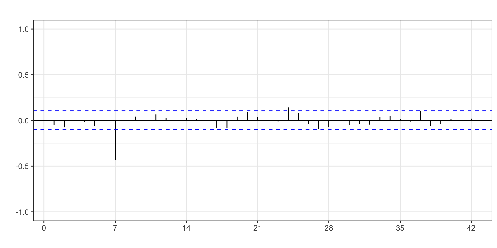
ndiffs(electricidad)[1] 0nsdiffs(electricidad) [1] 1La FAC muestra que para que la serie sea estacionaria y ergódica es necesaria la doble diferenciación regular y estacional, aunque la función ndiffs no indica que la diferenciación regular sea necesaria. Trabajaremos con la siguiente serie transformada \[\nabla\nabla_{12}electricidad_t \sim I(0)I_{12}(0).\]
Identificación
Antes de proceder con la primera autoidentifación, vamos a analizar que intervención puede ser necesaria para estimar y predecir adecuadamente la serie.
Efectos calendario
La Figura 16 muestra que los días festivos hay una marcada caída de la demanda de electricidad (véase el análisis de esta serie realizada en el Tema 2. Por ejemplo, destaca el bajo consumo el 1 de enero (primer dato de la serie), en Navidades o en Semana Santa (semana 13 del año).
Vamos a asumir que la caída en el consumo depende del día de la semana. Es decir, que en un martes festivo la caída del consumo será mayor que la de un domingo festivo porque en el segundo caso el consumo ya es de por si muy bajo.
Por tanto, para realizar un análisis detallado de la serie vamos crear variables ficticias que identifiquen los días festivos del calendario. Además, vamos a distinguir si el festivo ha sido entre semana (de lunes a viernes), o en fin de semana (sábado ydomingo).3
El siguiente código hace todo el trabajo.
La primer comando crea una serie que identifica cada fecha del año 2024. La función
seqdevuelve un objetodatedonde cada fecha no se guarda como un texto (aunque se muestre así) sino de un formato fecha mas compleja.En el segundo comando el objeto
fiestasguarda los 12 días festivos del año: 11 fiestas nacionales y el lunes 1 de abril, festivo en muchas comunidades.En estos dos primeros comandos, la función
as.Datese usa para que R identifique una secuencia de caracteres como una fecha tipo “aaaa-mm-dd”.El tercer comando genera una serie ficticia para identificar los festivos entre semana. Primero se identifican que fechas del año aparecen incluidas entre las fiestas (
fechas %in% fiestas), generándose un vector booleano (TRUE/FALSE) de longitud 366. Luego se identifican que días del año han caído entre semana (cycle(electricidad) < 6), generándose otro vector TRUE/FALSE de longitud 366. El producto de estos dos vectores solo valdrá 1 (TRUE) si simultáneamente una fecha es festiva y ha caído entre semana.El último comando usa las mismas ideas para generar una serie ficticia que identifica los festivos en fin de semana.
fechas <- seq(as.Date("2024-01-01"), as.Date("2024-12-31"), "day")
fiestas <- as.Date(c("2024-01-01", "2024-01-06", "2024-03-29", "2024-03-31",
"2024-04-01", "2024-05-01", "2024-08-15", "2024-10-12",
"2024-11-01", "2024-12-06", "2024-12-08", "2024-12-25"))
festivosEntreSemana <- (fechas %in% fiestas) * (cycle(electricidad) < 6)
festivosFinSemana <- (fechas %in% fiestas) * (cycle(electricidad) > 5)Al final el código nos devuelve dos variables ficticias: festivosEntreSemana valdrá 1 en la posición del año correspondiente a un día festivo entre semana y 0 en otro caso; festivosFinDeSemana valdrá 1 en la posición del año correspondiente a día de fin de semana festivo y 0 en otro caso.
Efecto temperatura
El consumo de electricidad está fuertemente relacionado con la temperatura. La Figura 18 muestra una relación en forma de U entre la temperatura y el consumo de electricidad: cuanto más se aleja la temperatura de la media anual (por exceso de frío o de calor) mayor es el consumo eléctrico.
temperatura <- read.csv("./series/Temperatura.csv")
temperatura <- temperatura[, 1]
ggplot() +
geom_point(aes(x = temperatura, y = electricidad), size = 2) +
xlab("Temperatura (ºC)") +
ylab("Demanda eléctrica (GWh)")
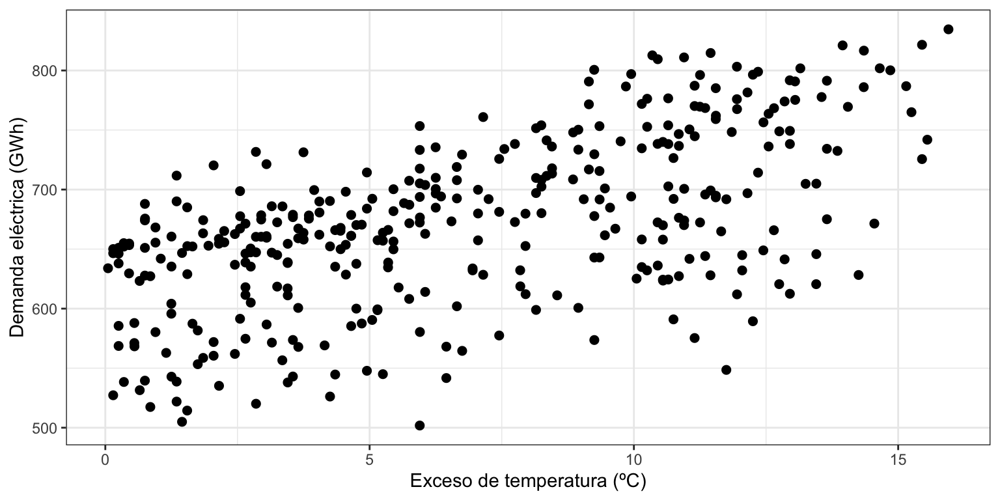
Vamos a crear una variable ficticia diferenciaTemperatura que valdrá para cada día la diferencia de temperatura respecto de la media anual.
diferenciaTemperatura <- abs(temperatura - mean(temperatura))Identificación
Probamos con la función auto.arima, indicando la doble diferenciación, los días festivos entre semana, los festivos en domingo y la diferencia de temperatura respecto de la media anual.
auto.arima(electricidad,
d = 1,
D = 1,
xreg = cbind(festivosEntreSemana, festivosFinSemana,
diferenciaTemperatura))Series: electricidad
Regression with ARIMA(0,1,1)(0,1,1)[7] errors
Coefficients:
ma1 sma1 festivosEntreSemana festivosFinSemana
0.1734 -0.9166 -71.1134 -6.4956
s.e. 0.0643 0.0480 4.1155 4.9844
diferenciaTemperatura
2.3561
s.e. 0.4253
sigma^2 = 244.6: log likelihood = -1496.32
AIC=3004.63 AICc=3004.87 BIC=3027.91El modelo identificado es el de la aerolíneas, ARIMA(0, 1, 1)(0, 1, 1). Respecto de la intervención,
- el coeficiente de la intervención
festivosFinDeSemanaclaramente no es significativo, - si hay una caída significativa en el consumo cuando el festivo cae entre semana (
festivosEntreSemana), - el aumento del consumo conforme la temperatura se aleja de la media anual también es significativo.
Estimación (y valores extremos)
Vamos a estimar el modelo de las aerolíneas sin tener en cuenta los festivos en fin de semana.
ele.ar1 <- Arima(electricidad,
order = c(0, 1, 1),
seasonal = c(0, 1, 1),
xreg = cbind(festivosEntreSemana, diferenciaTemperatura))
ele.ar1Series: electricidad
Regression with ARIMA(0,1,1)(0,1,1)[7] errors
Coefficients:
ma1 sma1 festivosEntreSemana diferenciaTemperatura
0.1837 -0.9129 -70.5577 2.3349
s.e. 0.0629 0.0490 4.0404 0.4252
sigma^2 = 245.3: log likelihood = -1497.18
AIC=3004.35 AICc=3004.53 BIC=3023.76Veamos si es necesaria más intervención.
error <- residuals(ele.ar1)
sderror <- sd(error)
autoplot(error, series="Error",
colour = "black",
xlab = "",
ylab = "Error",
main = "") +
geom_hline(yintercept = c(-3, 3)*sderror,
colour = c("red", "red"),
lty = 2) +
scale_x_continuous(breaks= seq(1, 54, 4))
fechas[abs(error) > 3 * sderror][1] "2024-01-14" "2024-03-28" "2024-06-25" "2024-08-17" "2024-12-23"
[6] "2024-12-24"
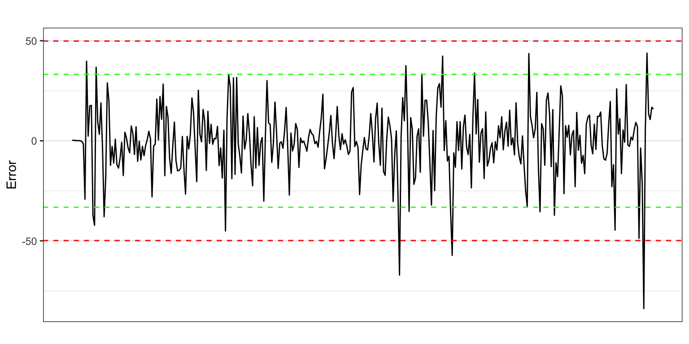
Se observan seis candidatos a valores atípicos por superar el error las 3 desviaciones típicas.
- El consumo es mayor de lo esperado (errores positivos) los días 25 de junio y 17 de agosto. Ambas fechas están cercanas a festivos (24 de junio San Juan, festivo en muchas zonas de España, y 15 de agosto) y esta puede ser la causa, pero no está claro.
- El consumo es menor de lo esperado (errores negativos) los días 14 de enero, 28 de marzo (Jueves Santo), y 23 y 24 de diciembre (periodo navideño). Para las tres últimas fechas, la causa está clara, son días festivos en gran parte de España o días muy vacacionales, generando una caída en el consumo de electricidad.
Deberíamos intervenir en aquellos días donde la caída del consumo está asociada a procesos festivos, pero a fin de aligerar este ejemplo no vamos a modificar el modelo actual.
Validación
Coeficientes significativos
Veamos si los coeficientes del modelo son significativos. Para ello, aplicamos la prueba z.
coeftest(ele.ar1)
z test of coefficients:
Estimate Std. Error z value Pr(>|z|)
ma1 0.183658 0.062927 2.9186 0.003516 **
sma1 -0.912882 0.048986 -18.6357 < 2.2e-16 ***
festivosEntreSemana -70.557741 4.040400 -17.4631 < 2.2e-16 ***
diferenciaTemperatura 2.334905 0.425190 5.4914 3.987e-08 ***
---
Signif. codes: 0 '***' 0.001 '**' 0.01 '*' 0.05 '.' 0.1 ' ' 1Todos los coeficientes son significativos.
Medidas de bondad de ajuste
En media nos equivocamos en 15 GWh (RMSE) y el error porcentual medio es del 1.6%, muy reducido.
La serie no presenta sesgo y el intervalo de confianza para las predicciones es válido.
accuracy(ele.ar1) ME RMSE MAE MPE MAPE MASE ACF1
Training set -1.17 15.4 11.12 -0.18 1.64 0.4 0Error de predicción extramuestral según horizonte temporal
Asumimos que se precisan veinte semanas para hacer una buena estimación, \(k = 140\), y fijaremos el horizonte temporal en una semana, \(h = 7\) días. Como el modelo apenas presenta valores atípicos, podemos calcular como medida de precisión el valor medio en lugar del mediano.
k <- 140
h <- 7
T <- length(electricidad)
s <- T - k - h
mapeArima <- matrix(NA, s + 1, h)
X <- data.frame(cbind(festivosEntreSemana, diferenciaTemperatura))
for (i in 0:s) {
train.set <- subset(electricidad, start = i + 1, end = i + k)
test.set <- subset(electricidad, start = i + k + 1, end = i + k + h)
X.train <- as.matrix(X[(i + 1):(i + k),])
X.test <- as.matrix(X[(i + k + 1):(i + k + h),])
fit <- try(Arima(train.set,
order = c(0, 1, 1),
seasonal = c(0, 1, 1),
xreg = X.train))
if(!is.element("try-error", class(fit))) {
fcast <- forecast(fit, h = h, xreg = X.test)
mapeArima[i + 1,] <- 100*abs(test.set - fcast$mean)/test.set
}
}
errorArima <- colMeans(mapeArima, na.rm = TRUE)
errorArima[1] 1.634380 2.442403 2.897292 3.199880 3.327570 3.465907 3.557186El error de predicción parte del 1.6% para previsiones a un día vista (algo inferior al error de ajuste) y aumenta progresivamente según aumenta el horizonte de predicción, pasando al 3.6% a 7 días vista.
Incorrelación, Homocedasticidad y Normalidad
Veamos ahora si el residuo es ruido blanco.
Box.test(error, lag = 2,type = "Ljung-Box")
Box-Ljung test
data: error
X-squared = 1.3988, df = 2, p-value = 0.4969Box.test(error, lag = 14,type = "Ljung-Box")
Box-Ljung test
data: error
X-squared = 40.578, df = 14, p-value = 0.0002072Box.test(error^2, lag = 2, type = "Ljung-Box")
Box-Ljung test
data: error^2
X-squared = 13.178, df = 2, p-value = 0.001376Box.test(error^2, lag = 14, type = "Ljung-Box")
Box-Ljung test
data: error^2
X-squared = 22.483, df = 14, p-value = 0.06921jarque.bera.test(error)
Jarque Bera Test
data: error
X-squared = 170.83, df = 2, p-value < 2.2e-16ggAcf(error, lag = 35, main = "")
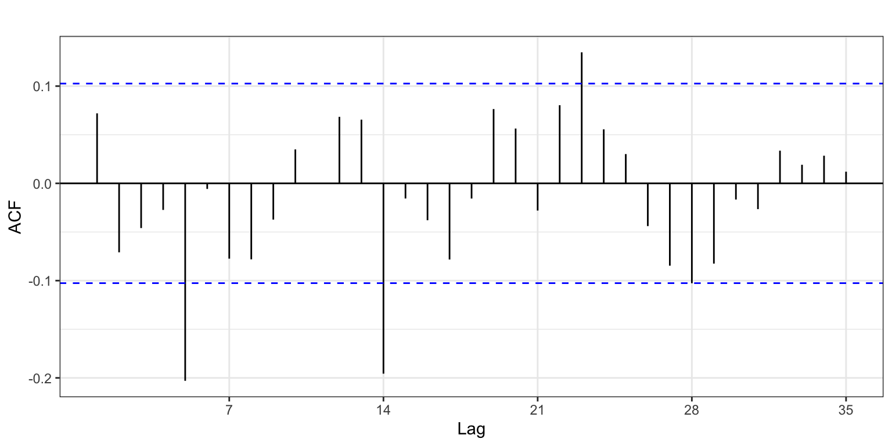
Claramente hay autocorrelaciones significativas, además en retardos relevantes (véase Figura 20), el error no muestra ser homocedástico ni seguir una distribución normal.
Una posible razón para la presencia de autocorrelación y heterocedasticidad puede ser una identificación del modelo incorrecta: igual la diferenciación regular no es precisa o igual hay que dejar el proceso AR(1) regular aunque su coeficiente sea no significativo. También la presencia de días atípicos sin intervención puede ser la causa del incumplimiento de las hipótesis.
Interpretación
El modelo teórico es \(electricidad_t \sim ARIMA_{7}(0, 1, 1)(0, 1, 1) + AI\), modelo de las aerolíneas con intervención. Como ya hemos visto el desarrollo de este modelo teórico en el apartado 4.5, pasamos directamente al modelo estimado: \[ \begin{aligned} \widehat{electricidad_t} = & electricidad_{t-1} + (electricidad_{t-7} - electricidad_{t-8}) +\\ & 0.18 \varepsilon_{t-1} - 0.91 \varepsilon_{t-7} - 0.17 \varepsilon_{t-8} \\ & -70.6 \cdot festivos_t + 2.3 \cdot diferenciaTemperatura_t \end{aligned} \]
- El consumo de electricidad de un día es el mismo que el del día anterior más la variación observada entre estos dos días la semana pasada. Por ejemplo, el consumo un miércoles es el del martes pasado más la variación observada entre el martes y el miércoles de la semana previa.
- Los días festivos entre semana el consumo cae en 70.6 GWh respecto de la demanda en un día no festivo entre semana.
- Por cada grado centígrado que la temperatura se aleja de la media anual, el consumo aumenta en 2.3 GWh.
Predicción de la serie
Una vez dado por válido el modelo, podemos pasar a realizar predicciones para los próximos siete días y mostrar los resultados numérica y gráficamente (Figura 21).
Teniendo en cuenta las dos variables de intervención:
- Para el efecto calendario debemos indicar qué valores tomará en el periodo de predicción, es decir, que días son festivos entre semana. Como el rango de predicción abarca del 1 al 7 de enero de 2025, se marcarán como festivos el miércoles día 1 (Año nuevo) y el lunes 6 (Reyes).
- Para el efecto de la temperatura deberíamos, primero, obtener la temperatura prevista para el periodo de predicción y, después, calcular el exceso o defecto de temperatura respecto de la media anual. La previsión de la temperatura se puede obtener de AEMET o de cualquier otro servicio de metereología.
Recuerda siempre incluir las variables ficticias en la función forecast en el mismo orden que aparecen en la estimación con Arima.
pfestivos <- c(1, 0, 0, 0, 0, 1, 0)
ptemperatura <- c(4.6, 5.0, 3.8, 3.5, 7.8, 8.8, 6.3)
pdiferenciaTemperatura <- abs(ptemperatura - mean(temperatura))
pele.ar1 <- forecast(ele.ar1,
h = 7,
xreg = cbind(pfestivos, pdiferenciaTemperatura),
level = 95)
pele.ar1 Point Forecast Lo 95 Hi 95
53.28571 593.9934 563.2978 624.6889
53.42857 664.9575 617.3938 712.5211
53.57143 658.5071 598.6541 718.3602
53.71429 585.0029 514.9852 655.0206
53.85714 541.6158 462.7326 620.4991
54.00000 566.0608 479.2124 652.9093
54.14286 652.7118 558.5697 746.8540autoplot(pele.ar1,
xlab = "",
ylab = "GWh",
main = "") +
xlim(46, 55)
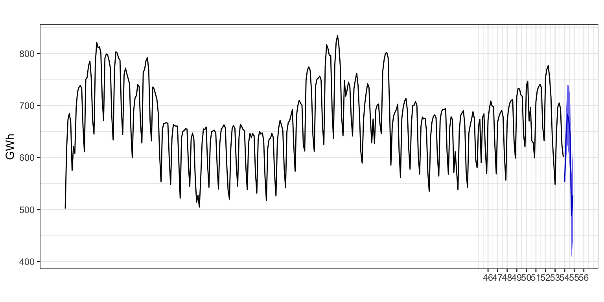
La Figura 21 muestra las últimas semanas de 2024 para la serie Electricidad y su predicción para la primera semana de 2025, junto con el intervalo de confianza. La calidad de ajuste es tan buena que el intervalo de confianza de las predicciones es muy estrecho.
3.4 Comparación con el método de Alisado exponencial
Veamos una comparativa, para los dos ejemplos vistos, entre los resultados obtenidos con ARIMA y con Alisado exponencial
Nacimientos (log)
| Método | Modelo | MAPE | |||
|---|---|---|---|---|---|
| Ajuste | Extra h = 1 | Extra h = 6 | Extra h =12 | ||
| ARIMA | (0,1,1)(0,1,1)+AI | 1.56 | 1.42 | 1.83 | 2.19 |
| Alisado | (A,N,A) | 1.99 | 2.41 | 3.41 | 4.12 |
Para Nacimientos, la mejora en los indicadores de calidad con ARIMA respecto de Alisado es muy reducida para predicciones a unos pocos meses vista, pero supera los dos puntos porcentuales para predicciones a 12 meses vista.
Exportaciones (log)
| Método | Modelo | MAPE | |||
|---|---|---|---|---|---|
| Ajuste | Extra h = 1 | Extra h = 6 | Extra h =12 | ||
| ARIMA | (0,1,1)(0,1,1)+AI | 2.94 | 2.65 | 4.18 | 5.52 |
| Alisado | (A,Ad,A) | 4.90 | 3.70 | 4.78 | 5.62 |
En el caso de Exportaciones, la mejora en la calidad con ARIMA respecto de Alisado es de un punto para predicciones a un periodo vista, pero nula para predicciones a 12 meses vista. ARIMA ofrece mejores resultados que Alisado solo para predicciones a corto plazo.
Electricidad
| Método | Modelo | MAPE | |||
|---|---|---|---|---|---|
| Ajuste | Extra h = 1 | Extra h = 4 | Extra h =7 | ||
| ARIMA | (0,1,1)(0,1,1)+AI | 1.64 | 1.63 | 3.20 | 3.56 |
| Alisado | (A,Ad,A) | 2.17 | 2.07 | 3.70 | 4.18 |
En el caso de Electricidad, la mejora en la calidad de las predicciones con ARIMA respecto de Alisado es inferior al punto porcentual. El uso de los modelos Arima no parece muy justificado, más allá de poder corregir las predicciones en los días festivos.
4 Resumen de los comandos utilizados
| Función | Paquete | Descripción |
|---|---|---|
bizdays |
forecast | da el número de días laborables de cada mes |
easter |
forecast | da la proporción de días de Semana Santa que caen en Marzo y Abril |
mothdays |
forecast | da el número de días de cada mes |
seas |
forecast | identifica y estima automáticamente un modelo Arima aplicando el procedimiento X-13 |
Footnotes
Para una serie con 306 observaciones, como Nacimientos, por simple azar puede haber 14 errores del modelo que superen el umbral de las dos desviaciones típicas, o 4 observaciones que superen el umbral de 2.5 d.t. pero solo una debería superar el umbral de las 3 d.t.↩︎
Rpermite crear tu propio calendario de festivos y existen otras librerías que extienden las opciones debizdays. En el ejemplo de Pasajeros puedes ver como construir la serie de días laborables del mes para España paso a paso.↩︎Para este análisis solo se van a considerar los festivos nacionales en 2024 al que añadiremos el lunes de Semana Santa. Es posible que algunos festivos autonómicos en comunidades muy pobladas tengan un efecto sobre el consumo eléctrico, pero esto es un ejercicio y hay que limitar el alcance del análisis.↩︎